Produktübersicht
ZOLLER Solutions stehen für Ihre Zukunft – wir machen Sie erfolgreicher. Denn wer schneller und effizienter fertigt, arbeitet wirtschaftlicher, um in die Zukunft investieren zu können. Wenn wirtschaftlicher Fortschritt Ihr Ziel ist, dann ist ZOLLER Ihr Partner.
Software
»TMS Core«
Der ideale Startpunkt für die digitale Werkzeugorganisation
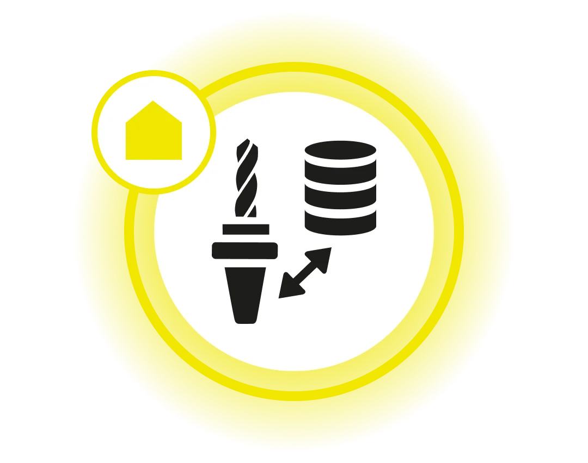
Add-on »z.Stock«
Sorgt für klare Transparenz im Werkzeuglager

Add-on »z.CAM Integration«
Erweitert das System um leistungsstarke Schnittstellen und bindet Werkzeugdaten direkt in den Workflow ein
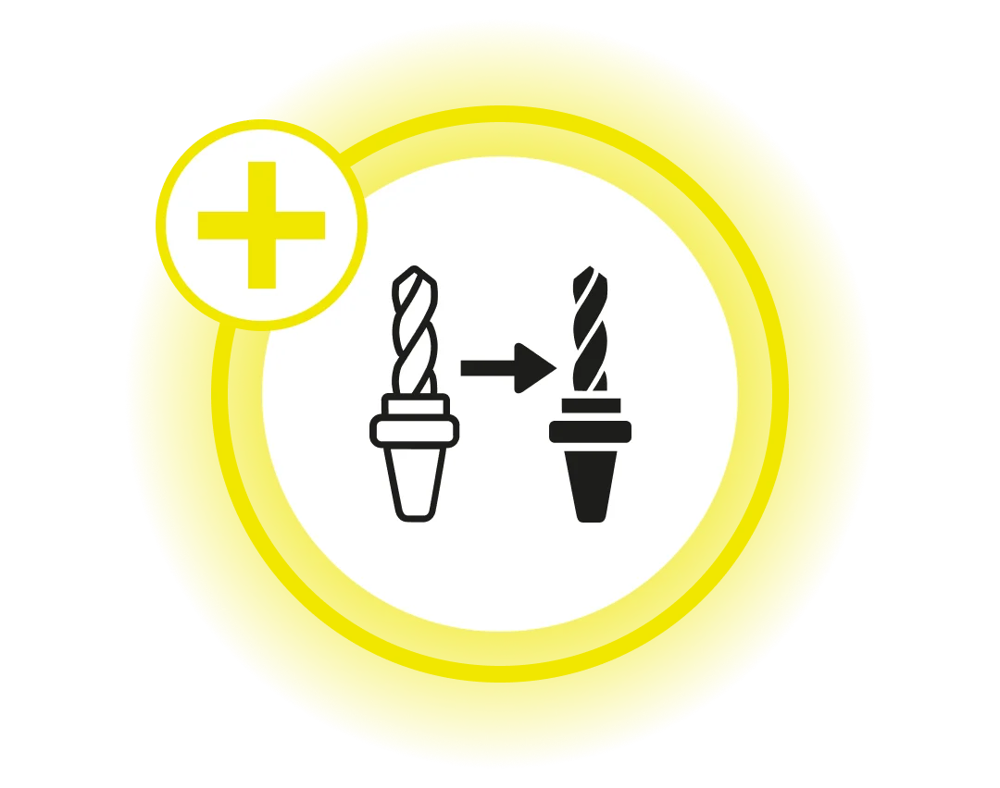
Add-on »z.Resources«
Verwaltet alle zusätzlichen Betriebsmittel
Add-on »z.Shopfloor«
Durchgängiger, effizienter Werkzeugkreislauf direkt am Shopfloor
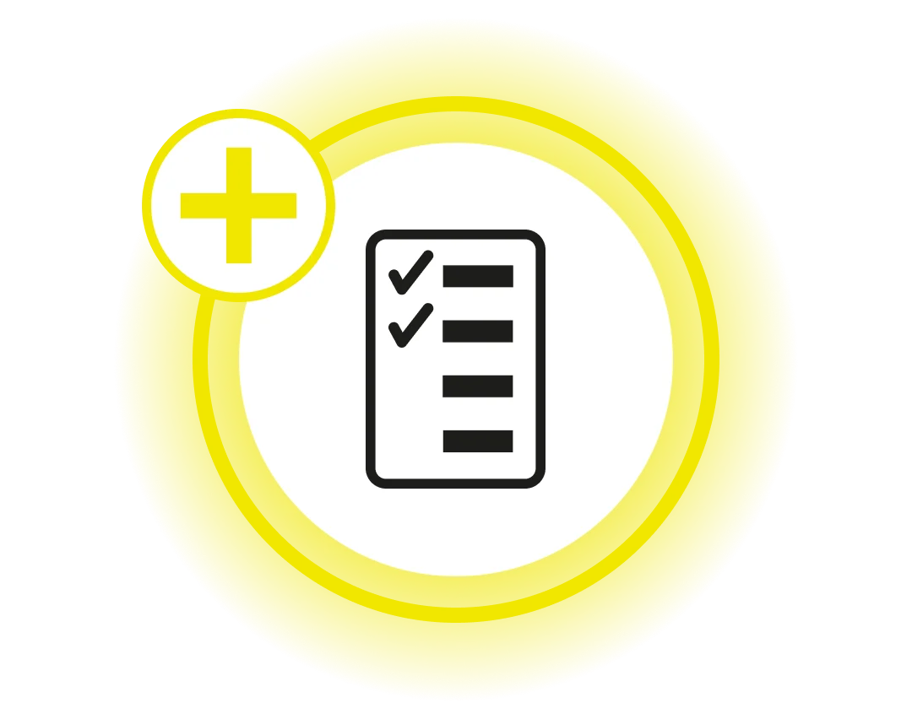
Add-on »z.Connectivity«
Durchgängige, digitale Verbindung zwischen Werkzeugvermessung, Werkzeugverwaltung und Maschine
Add-on »z.Integration«
Herstellerunabhängige Werkzeugmanagement-Lösung für gewachsene Fertigungsumgebungen
Werkzeuglager
»twister«
Für Werkzeugkomponenten und Zubehörteile
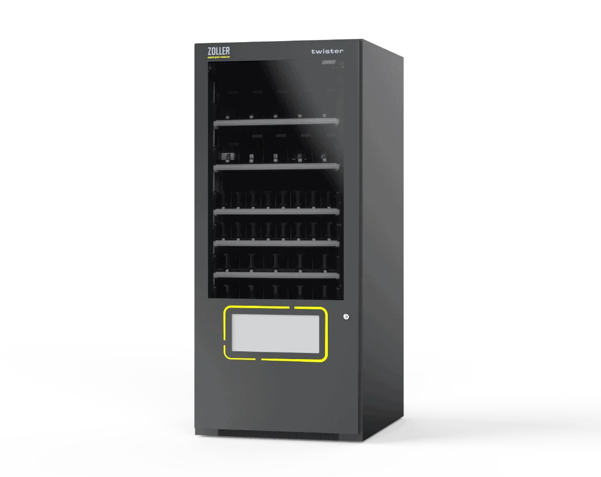
»autoLock«
Für Prüfmittel, Betriebsstoffe und größere Komponenten
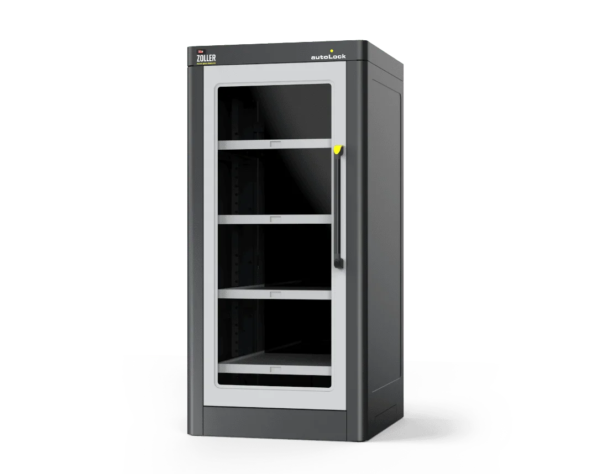
»toolOrganizer«
Für Schneidwerkzeuge und Kleinteile
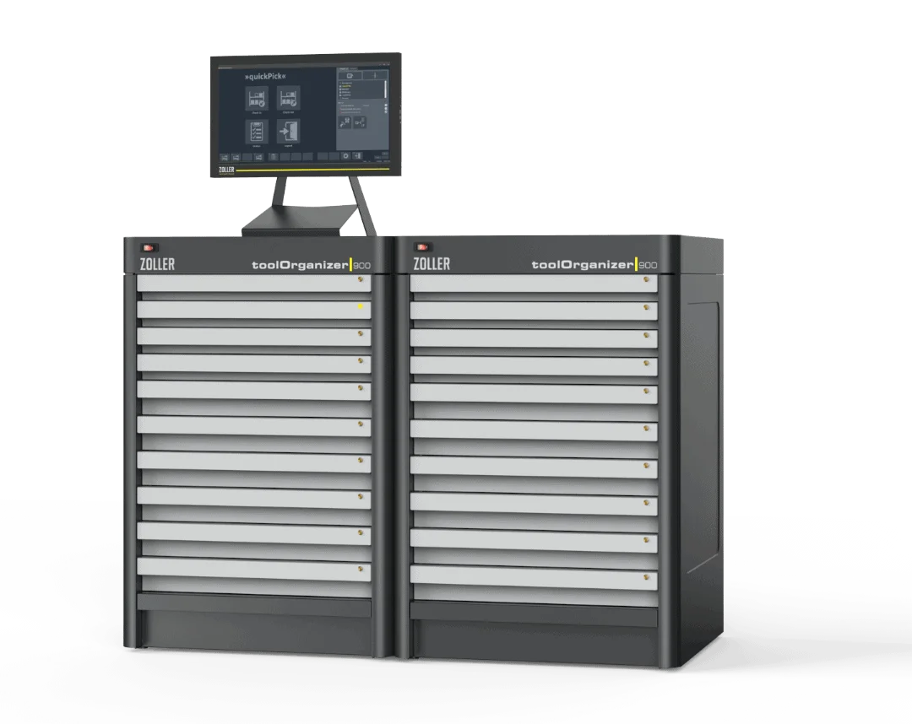
»keeper«
Für Komplettwerkzeuge und Werkzeughalter
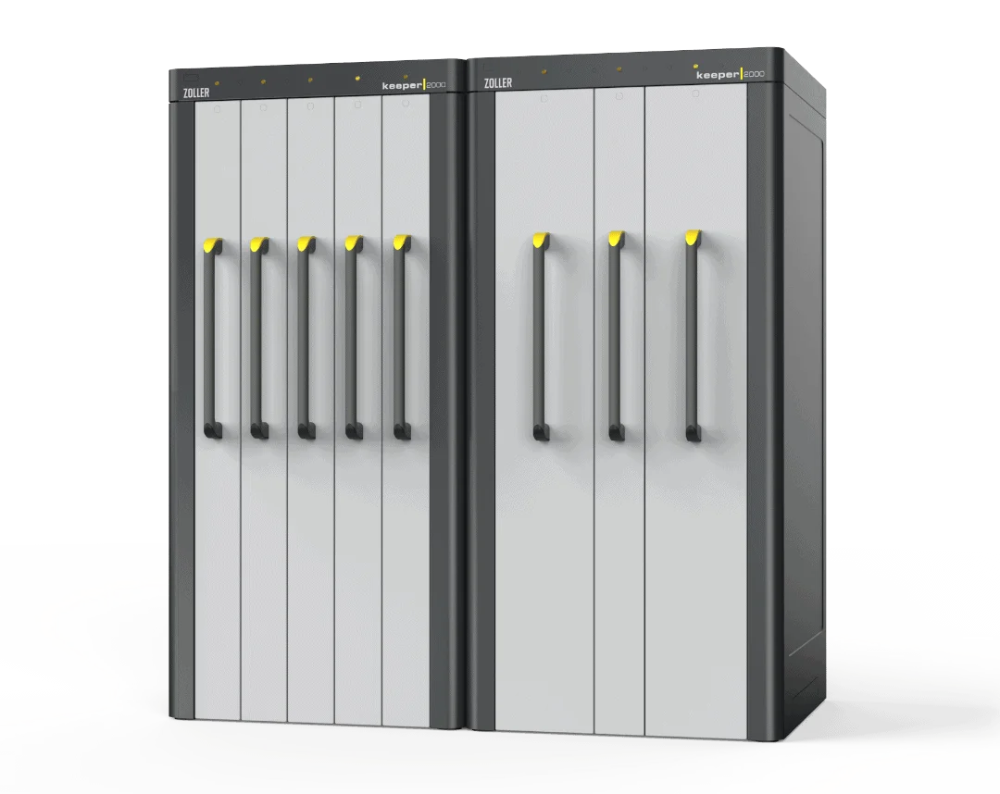
»z.Storage«
Ihre Artikel mit dem Prinzip eines Ausgabeautomaten ausgegeben
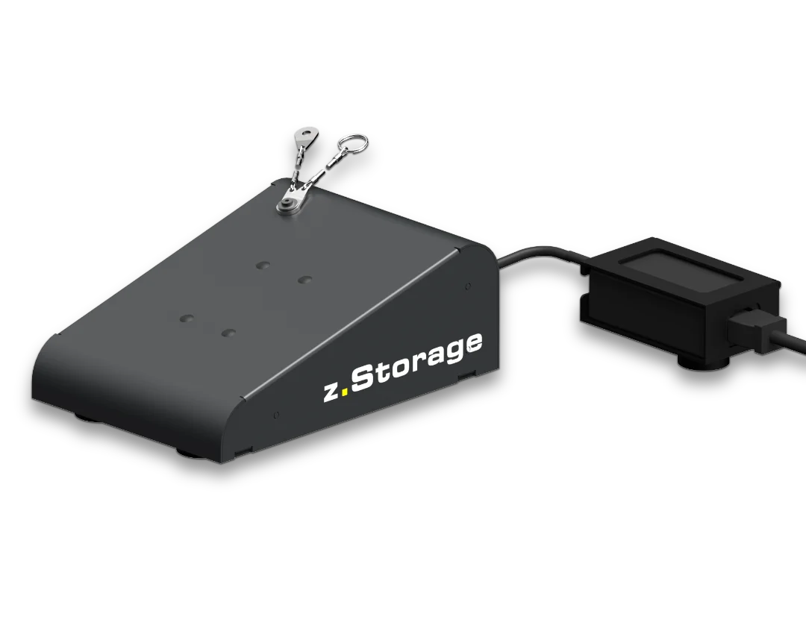